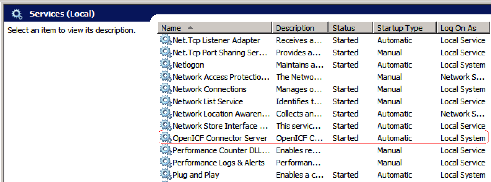

- 10.1. About OpenIDM and OpenICF
- 10.2. Accessing Remote Connectors
- 10.3. Configuring Connectors
- 10.4. Installing and Configuring Remote Connector Servers
- 10.5. Connectors Supported With OpenIDM 3.0.0
- 10.6. Creating Default Connector Configurations
- 10.7. Checking the Status of External Systems Over REST
- 10.8. Adding Attributes to Connectors
This chapter describes how to connect to external resources such as LDAP, Active Directory, flat files, and others. Configurations shown here are simplified to show essential aspects. Not all resources support all OpenIDM operations, however the resources shown here support most of the CRUD operations, and also reconciliation and LiveSync.
In OpenIDM, resources are external systems, databases, directory servers, and other sources of identity data to be managed and audited by the identity management system. To connect to resources, OpenIDM loads the Identity Connector Framework, OpenICF. OpenICF aims to avoid the need to install agents to access resources, instead using the resources' native protocols. For example, OpenICF connects to database resources using the database's Java connection libraries or JDBC driver. It connects to directory servers over LDAP. It connects to UNIX systems by using ssh.
OpenICF provides a common interface to allow identity services access to the resources that contain user information. OpenIDM loads the OpenICF API as one of its OSGi modules. OpenICF uses connectors to separate the OpenIDM implementation from the dependencies of the resource to which OpenIDM is connecting. A specific connector is required for each remote resource. Connectors can run either locally or remotely.
Local connectors are loaded by OpenICF as regular bundles in the OSGi container. Remote connectors must be executed on a remote connector server. Most connectors can be run locally. However, a remote connector server is required when access libraries that cannot be included as part of the OpenIDM process are needed. If a resource, such as Microsoft Active Directory, does not provide a connection library that can be included inside the Java Virtual Machine, OpenICF can use the native .dll with a remote .NET connector server. In other words, OpenICF connects to Active Directory through a remote connector server that is implemented as a .NET service.
Connections to remote connector servers are configured in a single
connector info provider configuration file, located in
/path/to/openidm/conf.
Connectors themselves are configured through
provisioner files. One provisioner file must exist for
each connector. Provisioner files are named
provisioner.openicf- where
namename corresponds to the name of the connector,
and are also located in the /path/to/openidm/conf
directory.
A number of sample connector configurations are available in the
openidm/samples/provisioners directory. To use these
connectors, edit the configuration files as required, and copy them to the
openidm/conf directory.
The following figure shows how OpenIDM connects to resources by using connectors and remote connector servers. The figure shows one local connector (LDAP) and two remote connectors (Scripted SQL and PowerShell). In this example, the remote Scripted SQL connector uses a remote Java connector server. The remote PowerShell connector always requires a remote .NET connector server.
Tip
Connectors that use the .NET framework must run remotely. Java connectors can be run locally or remotely. Run them as remote services for scalability, or to have the service run in the cloud.
When you configure a remote connector, you use the connector info
provider service to connect through a remote connector server.
The connector info provider service configuration is stored in the file
openidm/conf/provisioner.openicf.connectorinfoprovider.json.
A sample configuration file is provided in the
openidm/samples/provisioners/ directory. To use this
sample configuration, edit the file as required, and copy it to the
openidm/conf directory.
The connector info provider service takes the following configuration:
{
"connectorsLocation" : string,
"remoteConnectorServers" : [remoteConnectorServer objects]
}- connectorsLocation
string, optional
Specifies the directory in which the OpenICF connectors are located, relative to the OpenIDM installation directory. The default location is
openidm/connectors.- remoteConnectorServers
array of RemoteConnectorServer objects, optional
An array of remote connector servers that are managed by this service.
The following example shows a remoteConnectorServer object
configuration.
{
"name" : "dotnet",
"host" : "127.0.0.1",
"port" : 8759,
"heartbeatInterval" : 60,
"useSSL" : false,
"timeout" : 0,
"key" : "Passw0rd"
}You can configure the following remote connector server object properties.
- name
string, required
The name of the remote connector server object. This name is used to identify the remote connector server in the list of connector reference objects.
- host
string, required
The remote host to connect to.
- port
string, optional
The remote port to connect to. The default remote port is 8759.
- heartbeatInterval
integer, optional
The interval, in seconds, at which heartbeat packets are transmitted. If the connector server is unreachable, based on this heartbeat interval, all services that use the connector server are made unavailable until the connector server can be reached again. The default interval is 60 seconds.
- useSSL
boolean, optional
Specifies whether to connect to the connector server over SSL. The default value is
false.- timeout
integer, optional
Specifies the timeout (in milliseconds) to use for the connection. The default value is
0, which means that there is no timeout.- key
string, required
The secret key, or password, to use to authenticate to the remote connector server.
Connectors are configured through the OpenICF provisioner service. Each
connector configuration is stored in a file in the
openidm/conf/ folder, and accessible over REST at the
openidm/conf endpoint. Configuration files are named
openidm/conf/provisioner.openicf-
where namename corresponds to the name of the
connector. A number of sample connectors are available in the
openidm/samples/provisioners directory. To use these
connectors, edit the configuration files as required, and copy them to the
openidm/conf directory.
If you are creating your own connector configuration files, do
not include additional dash characters ( - ) in the
connector name, as this might cause
problems with the OSGi parser. For example, the name
provisioner.openicf-hrdb.json is fine. The name
provisioner.openicf-hr-db.json is not.
The following example shows a connector configuration for an XML file resource.
{
"name" : "xml",
"connectorRef" : connector-ref-object,
"poolConfigOption" : pool-config-option-object,
"operationTimeout" : operation-timeout-object,
"configurationProperties" : configuration-properties-object,
"objectTypes" : object-types-object,
"operationOptions" : operation-options-object
}
The "name" property specifies the name of the system to
which you are connecting. This name must be
alphanumeric.
The following example shows a connector reference object.
{
"bundleName" : "org.forgerock.openicf.connectors.xml-connector",
"bundleVersion" : "[1.1,1.5]",
"connectorName" : "org.forgerock.openicf.connectors.xml.XMLConnector",
"connectorHostRef" : "host"
}- bundleName
string, required
The
ConnectorBundle-Nameof the OpenICF connector.- bundleVersion
string, required
The
ConnectorBundle-Versionof the OpenICF connector. The value can be a single version (such as1.4.0.0) or a range of versions, which enables you to support multiple connector versions in a single project.You can specify a range of versions as follows:
[1.1.0.0,1.4.0.0]indicates that all connector versions from 1.1 to 1.4, inclusive, are supported.[1.1.0.0,1.4.0.0)indicates that all connector versions from 1.1 to 1.4, including 1.1 but excluding 1.4, are supported.(1.1.0.0,1.4.0.0]indicates that all connector versions from 1.1 to 1.4, excluding 1.1 but including 1.4, are supported.(1.1.0.0,1.4.0.0)indicates that all connector versions from 1.1 to 1.4, exclusive, are supported.
- connectorName
string, required
The Connector implementation class name.
- connectorHostRef
string, optional
If the connector runs remotely, the value of this field must match the
namefield of theRemoteConnectorServersobject in the connector server configuration file (provisioner.openicf.connectorinfoprovider.json). For example:... "remoteConnectorServers" : [ { "name" : "dotnet", ...If the connector runs locally, the value of this field can be one of the following:
If the connector .jar is installed in
openidm/connectors/, the value must be"#LOCAL". This is currently the default, and recommended location.If the connector .jar is installed in
openidm/bundle/(not recommended), the value must be"osgi:service/org.forgerock.openicf.framework.api.osgi.ConnectorManager".
The Pool Configuration Option ("poolConfigOption")
specifies the pool configuration for poolable connectors only. Non-poolable
connectors ignore this parameter.
The following example shows a pool configuration option object for a poolable connector.
{
"maxObjects" : 10,
"maxIdle" : 10,
"maxWait" : 150000,
"minEvictableIdleTimeMillis" : 120000,
"minIdle" : 1
}- maxObjects
The maximum number of idle and active instances of the connector.
- maxIdle
The maximum number of idle instances of the connector.
- maxWait
The maximum time, in milliseconds, that the pool waits for an object before timing out. A value of
0means that there is no timeout.- minEvictableIdleTimeMillis
The maximum time, in milliseconds, that an object can be idle before it is removed. A value of
0means that there is no idle timeout.- minIdle
The minimum number of idle instances of the connector.
The operation timeout enables you to configure timeout values per operation type. By default, there is no timeout configured for any operation type. A sample configuration follows:
{
"CREATE" : -1,
"TEST" : -1,
"AUTHENTICATE" : -1,
"SEARCH" : -1,
"VALIDATE" : -1,
"GET" : -1,
"UPDATE" : -1,
"DELETE" : -1,
"SCRIPT_ON_CONNECTOR" : -1,
"SCRIPT_ON_RESOURCE" : -1,
"SYNC" : -1,
"SCHEMA" : -1
}operation-nameTimeout in milliseconds
A value of
-1disables the timeout.
This object contains the configuration for the connection between the connector and the resource, and is therefore resource specific.
The following example shows a configuration properties object for the default XML sample resource connector.
"configurationProperties" : {
"xsdIcfFilePath" : "&{launcher.project.location}/data/resource-schema-1.xsd",
"xsdFilePath" : "&{launcher.project.location}/data/resource-schema-extension.xsd",
"xmlFilePath" : "&{launcher.project.location}/data/xmlConnectorData.xml"
}propertyIndividual properties depend on the type of connector.
This configuration object specifies the object types (user, group, and so
on) that are supported by the connector. The property name defines the
objectType, used in the URI:
system/$systemName/$objectType
The configuration is based on the JSON Schema with the extensions described in the following section.
Attribute names that start or end with __ are specific to
the resource type and are used by OpenICF for particular purposes, such as
__NAME__, used as the naming attribute for objects on a
resource.
The following extract shows the configuration of an
account object type.
{
"account" :
{
"$schema" : "http://json-schema.org/draft-03/schema",
"id" : "__ACCOUNT__",
"type" : "object",
"nativeType" : "__ACCOUNT__",
"properties" :
{
"name" :
{
"type" : "string",
"nativeName" : "__NAME__",
"nativeType" : "JAVA_TYPE_PRIMITIVE_LONG",
"flags" :
[
"NOT_CREATABLE",
"NOT_UPDATEABLE",
"NOT_READABLE",
"NOT_RETURNED_BY_DEFAULT"
]
},
"groups" :
{
"type" : "array",
"items" :
{
"type" : "string",
"nativeType" : "string"
},
"nativeName" : "__GROUPS__",
"nativeType" : "string",
"flags" :
[
"NOT_RETURNED_BY_DEFAULT"
]
},
"givenName" : {
"type" : "string",
"nativeName" : "givenName",
"nativeType" : "string"
},
}
}
}- Object Level Extensions
- nativeType
string, optional
The native OpenICF object type.
The list of supported native object types is dependent on the resource, or on the connector. For example, an LDAP connector might have object types such as
__ACCOUNT__and__GROUP__.
- Property Level Extensions
- nativeType
string, optional
The native OpenICF attribute type.
The following native types are supported:
JAVA_TYPE_BIGDECIMAL JAVA_TYPE_BIGINTEGER JAVA_TYPE_BYTE JAVA_TYPE_BYTE_ARRAY JAVA_TYPE_CHAR JAVA_TYPE_CHARACTER JAVA_TYPE_DATE JAVA_TYPE_DOUBLE JAVA_TYPE_FILE JAVA_TYPE_FLOAT JAVA_TYPE_GUARDEDBYTEARRAY JAVA_TYPE_GUARDEDSTRING JAVA_TYPE_INT JAVA_TYPE_INTEGER JAVA_TYPE_LONG JAVA_TYPE_OBJECT JAVA_TYPE_PRIMITIVE_BOOLEAN JAVA_TYPE_PRIMITIVE_BYTE JAVA_TYPE_PRIMITIVE_DOUBLE JAVA_TYPE_PRIMITIVE_FLOAT JAVA_TYPE_PRIMITIVE_LONG JAVA_TYPE_STRING
- nativeName
string, optional
The native OpenICF attribute name.
- flags
string, optional
The native OpenICF attribute flags. The
requiredandmultivaluedflags are defined by the JSON schema.required="required" : truemultivalued="type" : "array"If the type is
array, an additional"items"field specifies the supported type for the objects in the array. For example:"groups" : { "type" : "array", "items" : { "type" : "string", "nativeType" : "string" }, ....
Note
Avoid using the dash character ( - ) in property names,
like last-name, as dashes in names make JavaScript syntax
more complex. If you cannot avoid the dash, then write
source['last-name'] instead of
source.last-name in the JavaScripts.
Operation options (specified with the "operationOptions"
property) define how to act on specified operations. You can, for example
deny operations on specific resources to avoid OpenIDM accidentally updating
a read-only resource during a synchronization operation.
The following example defines the options for the "SYNC"
operation.
"operationOptions" : {
{
"SYNC" :
{
"denied" : true,
"onDeny" : "DO_NOTHING",
"objectFeatures" :
{
"__ACCOUNT__" :
{
"denied" : true,
"onDeny" : "THROW_EXCEPTION",
"operationOptionInfo" :
{
"$schema" : "http://json-schema.org/draft-03/schema",
"id" : "FIX_ME",
"type" : "object",
"properties" :
{
"_OperationOption-float" :
{
"type" : "number",
"nativeType" : "JAVA_TYPE_PRIMITIVE_FLOAT"
}
}
}
},
"__GROUP__" :
{
"denied" : false,
"onDeny" : "DO_NOTHING"
}
}
}
}
...The OpenICF Framework supports the following operations:
AUTHENTICATE: AuthenticationApiOpCREATE: CreateApiOpDELETE: DeleteApiOpGET: GetApiOpRESOLVEUSERNAME: ResolveUsernameApiOpSCHEMA: SchemaApiOpSCRIPT_ON_CONNECTOR: ScriptOnConnectorApiOpSCRIPT_ON_RESOURCE: ScriptOnResourceApiOpSEARCH: SearchApiOpSYNC: SyncApiOpTEST: TestApiOpUPDATE: UpdateApiOpVALIDATE: ValidateApiOp
- denied
boolean, optional
This property prevents operation execution if the value is
true.- onDeny
string, optional
If
deniedistrue, then the service uses this value. Default value:DO_NOTHING.DO_NOTHING: On operation the service does nothing.THROW_EXCEPTION: On operation the service throws aForbiddenExceptionexception.
Connectors that use the .NET framework must run remotely. Java connectors can run locally or remotely. Connectors that run remotely require a connector server to enable OpenIDM to access the connector.
Note
OpenIDM 3.0.0 supports version 1.4.0.0 of the OpenICF Framework. Therefore, you must use version 1.4.0.0 of the .NET Connector Server, or the Java Connector Server. The 1.4.0.0 Java Connector Server is backward compatible with the version 1.1.x connectors. The 1.4.0.0 .NET Connector Server is compatible only with the 1.4.x connectors.
This section describes the steps to install a .NET connector server and a remote Java Connector Server.
A .NET connector server is useful when an application is written in Java, but a connector bundle is written using C#. Because a Java application (for example, a J2EE application) cannot load C# classes, you must deploy the C# bundles under a .NET connector server. The Java application can communicate with the C# connector server over the network, and the C# connector server acts as a proxy to provide access to the C# bundles that are deployed within the C# connector server, to any authenticated application.
The .NET connector server requires the .NET framework (version 4.0.30319 or later) and is supported on Windows Server 2008 and 2008 R2.
By default, the connector server outputs log messages to a file named
connectorserver.log, in the
C:\path\to\openicf directory. To change the location of
the log file, set the initializeData parameter in the
configuration file, before you install the connector server. For example,
the following excerpt sets the log directory to
C:\openicf\logs\connectorserver.log.
<add name="file"
type="System.Diagnostics.TextWriterTraceListener"
initializeData="C:\openicf\logs\connectorserver.log"
traceOutputOptions="DateTime">
<filter type="System.Diagnostics.EventTypeFilter" initializeData="Information"/>
</add>Download the OpenICF .NET Connector Server from the Open Stack download page.
Click on the OpenIDM Download link on that page, and scroll down to "Connector Servers".
The .NET Connector Server is distributed in two formats. The
.msifile is a wizard that installs the Connector Server as a Windows Service. The.zipfile is simply a bundle of all the files required to run the Connector Server.If you do not want to run the Connector Server as a Windows service, download and extract the
.zipfile, and move on to Procedure 10.2, “Configuring the .NET Connector Server”. Otherwise, follow the steps in this section.Execute the
openicf-zip-1.4.0.0-dotnet.msiinstallation file and complete the wizard.When the wizard has completed, the Connector Server is installed as a Windows Service.
Open the Services console and make sure that the Connector Server is listed there.
The name of the service is
OpenICF Connector Server, by default.
After you have installed the .NET Connector Server, as described in the previous section, follow these steps to configure the Connector Server.
Make sure that the Connector Server is not currently running. If it is running, use the Services console to stop it.
At the command prompt, change to the directory where the Connector Server was installed.
c:\> cd "c:\Program Files (x86)\Identity Connectors\Connector Server"
Run the ConnectorServer /setkey command to set a secret key for the Connector Server. The key can be any string value. This example sets the secret key to
Passw0rd.ConnectorServer /setkey Passw0rd Key Updated.
This key is used by clients connecting to the Connector Server. The key that you set here must also be set in the OpenIDM connector info provider configuration file (
conf/provisioner.openicf.connectorinfoprovider.json). For more information, see Procedure 10.4, “Configuring OpenIDM to Connect to the .NET Connector Server”.Edit the Connector Server connection settings.
The Connector Server configuration is saved in a file named
ConnectorServer.exe.Config(in the directory in which the Connector Server is installed).Check and edit this file, as necessary, to reflect your installation. In particular, check the connection properties, under the
<appsettings>item.<add key="connectorserver.port" value="8759" /> <add key="connectorserver.usessl" value="false" /> <add key="connectorserver.certificatestorename" value="ConnectorServerSSLCertificate" /> <add key="connectorserver.ifaddress" value="0.0.0.0" /> <add key="connectorserver.key" value="xOS4IeeE6eb/AhMbhxZEC37PgtE=" />The following connection properties are set by default.
connectorserver.portSpecifies the port on which the Connector Server listens.
Note
If Windows firewall is enabled, you must create an inbound port rule to open the TCP port for the connector server (8759 by default). If you do not open the TCP port, OpenIDM will be unable to contact the Connector Server. For more information, see the Microsoft documentation on creating an inbound port rule.
connectorserver.usesslIndicates whether client connections to the Connector Server should be over SSL. This property is set to
falseby default.To secure connections to the Connector Server, set this property to
trueand store the server certificate in your certificate store, using the following command:ConnectorServer /storeCertificate /storeName <certificate-store-name> /certificateFile <certificate>
connectorserver.certificatestorenameSpecifies the name of the certificate store, into which your server certificate has been installed.
connectorserver.ifaddressSpecifies a single IP address from which connections will be accepted.
If you set a value here (other than the default
0.0.0.0) connections from all IP addresses other than the one specified are denied.
Check the trace settings, in the same configuration file, under the
<system.diagnostics>item.<system.diagnostics> <trace autoflush="true" indentsize="4"> <listeners> <remove name="Default" /> <add name="myListener" type="System.Diagnostics.TextWriterTraceListener" initializeData="c:\connectorserver.log" traceOutputOptions="DateTime"> <filter type="System.Diagnostics.EventTypeFilter" initializeData="Information" /> </add> </listeners> </trace> </system.diagnostics>The Connector Server uses the standard .NET trace mechanism. For more information about tracing options, see Microsoft's .NET documentation for
System.Diagnostics.The default trace settings are a good starting point. For less tracing, you can change the EventTypeFilter's initializeData to "Warning" or "Error". For very verbose logging you can set the value to "Verbose" or "All". The level of logging performed has a direct effect on the performance of the Connector Servers, so take care when setting this level.
Start the .NET Connector Server in one of the following ways.
Start the server as a Windows service, by using the Microsoft Services Console.
Locate the connector server service (
OpenICF Connector Server), and clickStart the serviceorRestart the service.The service is executed with the credentials of the "run as" user (
System, by default).Start the server as a Windows service, by using the command line.
In the Windows Command Prompt, run the following command:
net start ConnectorServerService
To stop the service in this manner, run the following command:
net stop ConnectorServerService
Start the server without using Windows services.
In the Windows Command Prompt, change directory to the location where the Connector Server was installed. The default location is
c:\Program Files (x86)\Identity Connectors\Connector Server.Start the server with the following command:
ConnectorServer.exe /run
Note that this command starts the Connector Server with the credentials of the current user. It does not start the server as a Windows service.
The connector info provider service enables you to configure one or more
remote connector servers to which OpenIDM can connect. The connector info
provider configuration is stored in a file named
openidm/conf/provisioner.openicf.connectorinfoprovider.json.
A sample connector info provider configuration file is located in
openidm/samples/provisioners/.
To configure OpenIDM to use the remote .NET connector server, follow these steps:
Start OpenIDM, if it is not already running.
Copy the sample connector info provider configuration file to the
path/to/openidm/confdirectory.$ cd /path/to/openidm $ cp samples/provisioners/provisioner.openicf.connectorinfoprovider.json conf/
Edit the connector info provider configuration, specifying the details of the remote connector server.
"remoteConnectorServers" : [ { "name" : "dotnet", "host" : "192.0.2.0", "port" : 8759, "useSSL" : false, "timeout" : 0, "key" : "Passw0rd" } ]Configurable properties are as follows:
nameSpecifies the name of the connection to the .NET connector server. The name can be any string. This property is referenced in the connector configuration file (
provisioner.openicf-ad.jsonwith the"connectorHostRef"property.hostSpecifies the IP address of the host on which the Connector Server is installed.
portSpecifies the port on which the Connector Server listens. This property matches the
connectorserver.portproperty in theConnectorServer.exe.configfile.For more information, see Procedure 10.2, “Configuring the .NET Connector Server”.
useSSLSpecifies whether the connection to the Connector Server should be secured. This property matches the
"connectorserver.usessl"property in theConnectorServer.exe.configfile.timeoutSpecifies the length of time, in seconds, that OpenIDM should attempt to connect to the Connector Server before abandoning the attempt. To disable the timeout, set the value of this property to
0.keySpecifies the connector server key. This property matches the
keyproperty in theConnectorServer.exe.configfile. For more information, see Procedure 10.2, “Configuring the .NET Connector Server”.The string value that you enter here is encrypted as soon as the file is saved.
In certain situations, it might be necessary to set up a remote Java Connector Server. This section provides instructions for setting up a remote Java Connector Server on Unix/Linux and Windows.
Download the OpenICF Java Connector Server from the Open Stack download page.
Click on the OpenIDM Download link on that page, and scroll down to "Connector Servers".
Change to the appropriate directory and unpack the zip file. The following command unzips the file in the current folder.
$ unzip openicf-zip-1.4.0.0.zip
Change to the
openicfdirectory:$ cd path/to/openicf
The Java Connector Server uses a
keyproperty to authenticate the connection. The default key value ischangeit. To change the value of the secret key, run a command similar to the following. This example sets the key value toPassw0rd:$ cd /path/to/openicf $ java \ -cp "./lib/framework/*" \ org.identityconnectors.framework.server.Main \ -setKey -key Passw0rd -properties ./conf/ConnectorServer.properties
Review the
ConnectorServer.propertiesfile in the/path/to/openicf/confdirectory, and make any required changes. By default, the configuration file has the following properties:connectorserver.port=8759 connectorserver.libDir=lib connectorserver.usessl=false connectorserver.bundleDir=bundles connectorserver.loggerClass=org.forgerock.openicf.common.logging.slf4j.SLF4JLog connectorserver.key=xOS4IeeE6eb/AhMbhxZEC37PgtE\=
Indicates whether client connections to the connector server should be over SSL. This property is set to
falseby default.To secure connections to the connector server, set this property to
trueand set the following properties before you start the connector server:java -Djavax.net.ssl.keyStore=mySrvKeystore -Djavax.net.ssl.keyStorePassword=Passw0rd
Start the Java Connector Server.
$ java -cp "./lib/framework/*" \ org.identityconnectors.framework.server.Main \ -run \ -properties ./conf/ConnectorServer.properties
The connector server is now running, and listening on port 8759, by default.
Log files are available in the
/path/to/openicf/logsdirectory.$ ls logs/ Connector.log ConnectorServer.log ConnectorServerTrace.log
If required, stop the Java Connector Server by pressing CTRL-C.
Download the OpenICF Java Connector Server from the Open Stack download page.
Click on the OpenIDM Download link on that page, and scroll down to "Connector Servers".
Change to the appropriate directory and unpack the zip file.
In a Command Prompt window, change to the
openicfdirectory:C:\>cd C:\path\to\openicf\bin
If required, secure the communication between OpenIDM and the Java Connector Server. The Java Connector Server uses a
keyproperty to authenticate the connection. The default key value ischangeit.To change the value of the secret key, use the
bin\ConnectorServer.bat /setkeycommand. The following example sets the key toPassw0rd:c:\path\to\openicf>bin\ConnectorServer.bat /setkey Passw0rd lib\framework\connector-framework.jar;lib\framework\connector-framework-internal .jar;lib\framework\groovy-all.jar;lib\framework\icfl-over-slf4j.jar;lib\framewor k\slf4j-api.jar;lib\framework\logback-core.jar;lib\framework\logback-classic.jar
Review the
ConnectorServer.propertiesfile in thepath\to\openicf\confdirectory, and make any required changes. By default, the configuration file has the following properties:connectorserver.port=8759 connectorserver.libDir=lib connectorserver.usessl=false connectorserver.bundleDir=bundles connectorserver.loggerClass=org.forgerock.openicf.common.logging.slf4j.SLF4JLog connectorserver.key=xOS4IeeE6eb/AhMbhxZEC37PgtE\=
You can either run the Java Connector Server as a Windows service, or just start and stop it from the command line.
To install the Java Connector Server as a Windows service, run the following command.
c:\path\to\openicf>bin\ConnectorServer.bat /install
If you install the connector server as a Windows service you can use the Microsoft Service Console to start, stop and restart the service. The Java Connector Service is named
OpenICFConnectorServerJava.To uninstall the Java Connector Server as a Windows service, run the following command.
c:\path\to\openicf>bin\ConnectorServer.bat /uninstall
To start the Java Connector Server from the command line, enter the following command:
c:\path\to\openicf>bin\ConnectorServer.bat /run lib\framework\connector-framework.jar;lib\framework\connector-framework-internal .jar;lib\framework\groovy-all.jar;lib\framework\icfl-over-slf4j.jar;lib\framework \slf4j-api.jar;lib\framework\logback-core.jar;lib\framework\logback-classic.jar
The connector server is now running, and listening on port 8759, by default.
Log files are available in the
\path\to\openicf\logsdirectory.If required, stop the Java Connector Server by pressing
^C.
OpenIDM 3.0.0 provides several connectors by default, in
the path/to/openidm/connectors directory. Additional
connectors can be downloaded from the Open Stack download page.
This section describes the connectors that are supported for use with OpenIDM 3.0.0, and provides instructions for installing and configuring these connectors. For instructions on building connector configurations interactively, see Section 10.6, “Creating Default Connector Configurations”.
A sample XML connector configuration is provided in
path/to/openidm/samples/provisioners/provisioner.openicf-xml.json.
The following extract of the provisioner configuration shows the main
configurable properties.
{
"connectorRef": {
"connectorHostRef": "#LOCAL",
"bundleName": "org.forgerock.openicf.connectors.xml-connector",
"bundleVersion": "[1.1,1.5]",
"connectorName": "org.forgerock.openicf.connectors.xml.XMLConnector"
}
}
The connectorHostRef is optional if the connector server
is local.
The configuration properties for the XML file connector set the relative path to the file containing the identity data, and also the paths to the required XML schemas.
{
"configurationProperties": {
"xsdIcfFilePath" : "&{launcher.project.location}/data/resource-schema-1.xsd",
"xsdFilePath" : "&{launcher.project.location}/data/resource-schema-extension.xsd",
"xmlFilePath" : "&{launcher.project.location}/data/xmlConnectorData.xml"
}
}
&{launcher.project.location} refers to the project
directory of your OpenIDM instance. For more information, see Default and
Custom Configuration Directories. Note that
relative paths such as these work only if your connector server runs
locally. For remote connector servers, you must specify the absolute path to
the schema and data files.
- xsdIcfFilePath
References the XSD file defining schema common to all XML file resources. Do not change the schema defined in this file.
- xsdFilePath
References custom schema defining attributes specific to your project.
- xmlFilePath
References the XML file containing account entries.
This sample demonstrates reconciliation of users stored in an XML file on a remote machine. The remote Java Connector Server enables OpenIDM to synchronize the internal OpenIDM repository with the remote XML repository.
Before You Start
This sample assumes that a remote Java Connector Server is installed and
running on a host named remote-host. For instructions on
setting up the remote Java Connector Server, see
Procedure 10.5, “Installing a Remote Java Connector Server for Unix/Linux” or
Procedure 10.6, “Installing a Remote Java Connector Server for Windows”.
The sample uses the XML data that is provided in the basic XML reconciliation sample (Sample 1). Before you start, copy the XML data from that sample to an accessible location on the machine that hosts the remote Java Connector Server. For example:
$ cd path/to/openidm $ scp -r samples/sample1/data testuser@remote-host:/home/testuser/xml-sample testuser@remote-host's password: resource-schema-1.xsd 100% 4083 4.0KB/s 00:00 resource-schema-extension.xsd 100% 1351 1.3KB/s 00:00 xmlConnectorData.xml 100% 1648 1.6KB/s 00:00
The XML connector runs as a remote connector, that is,
on the remote host on which the Java Connector Server is installed. Copy
the XML connector .jar from the OpenIDM installation to the
openicf/bundles directory on the remote host.
$ cd path/to/openidm $ scp connectors/xml-connector-1.4.0.0.jar testuser@remote-host:/path/to/openicf/bundles testuser@172.16.203.97's password: xml-connector-1.4.0.0.jar 100% 4379KB 4.3MB/s 00:00
This example uses the configuration of Sample 1, which is effectively
your OpenIDM project location. Any configuration changes that you make
must therefore be made in the conf directory of
sample1.
Copy the remote connector configuration file (
provisioner.openicf.connectorinfoprovider.json) from the provisioner samples directory to the configuration directory of your OpenIDM project (sample 1).$ cd path/to/openidm/samples/ $ cp provisioners/provisioner.openicf.connectorinfoprovider.json sample1/conf
Edit the remote connector configuration file (
provisioner.openicf.connectorinfoprovider.json) to match your network setup. Also, change the value of the"connectorsLocation"property to"bundles", as this is where the connector will be installed on the remote host.The following example indicates that the remote Java Connector server is running on the host
remote-host, listening on the default port, and configured with a secret key ofPassw0rd.{ "connectorsLocation" : "bundles", "remoteConnectorServers" : [ { "name" : "xml", "host" : "remote-host", "port" : 8759, "useSSL" : false, "timeout" : 0, "key" : "Passw0rd" } ] }Edit the XML connector configuration file (
provisioner.openicf-xml.json) in thesample1/confdirectory as follows.{ "name" : "xmlfile", "connectorRef" : { "connectorHostRef" : "xml", "bundleName" : "org.forgerock.openicf.connectors.file.openicf-xml-connector", "bundleVersion" : "[1.1,1.5]", "connectorName" : "org.forgerock.openicf.connectors.xml.XMLConnector" }, "configurationProperties" : { "xsdIcfFilePath" : "/home/testuser/xml-sample/data/resource-schema-1.xsd", "xsdFilePath" : "/home/testuser/xml-sample/data/resource-schema-extension.xsd", "xmlFilePath" : "/home/testuser/xml-sample/data/xmlConnectorData.xml" }, }The
"connectorHostRef"property indicates which remote connector server to use, and refers to the"name"property defined in theprovisioner.openicf.connectorinfoprovider.jsonfile.The
bundleVersion : [1.1,1.5]must be exactly the same as the version of the XML connector that you are using. If you specify a range here, the XML connector version must be included in this range.The
"configurationProperties"must specify the absolute path to the data files that you copied to the server on which the Java Connector Server is running.
Start OpenIDM with the configuration for Sample 1.
$ ./startup.sh -p samples/sample1/
In the Felix console, run the following command to show the state of the remote connector:
-> scr list ... [22] [active] org.forgerock.openidm.provisioner.openicf ...
The connector module (
org.forgerock.openidm.provisioner.openicf) should beactive, indicating that the remote connector has been installed correctly. If the connector state is notactive, check the configuration, following the preceding steps.The number of the connector module might differ. Make a note of the number returned.
View the configuration of the remote connector, by running the following command, substituting the number of the provisioner module returned in the previous step:
-> scr info 22
To test that the connector has been configured correctly, run a reconciliation operation as follows:
$ curl \ --cacert self-signed.crt \ --header "X-OpenIDM-Username: openidm-admin" \ --header "X-OpenIDM-Password: openidm-admin" \ --header "Content-Type: application/json" \ --request POST \ "https://localhost:8443/openidm/recon?_action=recon&mapping=systemXmlfileAccounts_managedUser"
If successful, the operation returns a reconciliation ID, similar to the following:
{"_id":"a5346543-db9a-4f8b-ba25-af2a1b576a54"}To verify that the users from the remote XML files have been created in the OpenIDM repository, run the following command:
$ curl \ --cacert self-signed.crt \ --header "X-OpenIDM-Username: openidm-admin" \ --header "X-OpenIDM-Password: openidm-admin" \ --request GET \ "https://localhost:8443/openidm/managed/user/?_queryId=query-all-ids" { "remainingPagedResults": -1, "pagedResultsCookie": null, "resultCount": 2, "result": [ { "_rev": "0", "_id": "bjensen" }, { "_rev": "0", "_id": "scarter" } ] }
A sample LDAP connector configuration is provided in
path/to/openidm/samples/provisioners/provisioner.openicf-ldap.json.
The following extract of the provisioner configuration shows the main
configurable properties.
The following excerpt shows the connectorRef
configuration property for connection to an LDAP server. The
connectorHostRef property is optional, if you use the
connector .jar provided in openidm/connectors, and you
use a local connector server.
{
"connectorRef": {
"connectorHostRef": "#LOCAL",
"connectorName": "org.identityconnectors.ldap.LdapConnector",
"bundleName": "org.forgerock.openicf.connectors.ldap-connector",
"bundleVersion": "[1.1,1.5]"
}
}The following excerpt shows the settings for the connector configuration properties in the sample LDAP connector.
"configurationProperties" : {
"host" : "localhost",
"port" : 1389,
"ssl" : false,
"principal" : "cn=Directory Manager",
"credentials" : "password",
"baseContexts" : [
"dc=example,dc=com"
],
"baseContextsToSynchronize" : [
"dc=example,dc=com"
],
"accountSearchFilter" : null,
"accountSynchronizationFilter" : null,
"groupSearchFilter" : null,
"groupSynchronizationFilter" : null,
"passwordAttributeToSynchronize" : null,
"synchronizePasswords" : false,
"removeLogEntryObjectClassFromFilter" : true,
"modifiersNamesToFilterOut" : [ ],
"passwordDecryptionKey" : null,
"changeLogBlockSize" : 100,
"attributesToSynchronize" : [ ],
"changeNumberAttribute" : "changeNumber",
"passwordDecryptionInitializationVector" : null,
"filterWithOrInsteadOfAnd" : false,
"objectClassesToSynchronize" : [
"inetOrgPerson"
],
"vlvSortAttribute" : "uid",
"passwordAttribute" : "userPassword",
"useBlocks" : false,
"maintainPosixGroupMembership" : false,
"failover" : [ ],
"readSchema" : true,
"accountObjectClasses" : [
"top",
"person",
"organizationalPerson",
"inetOrgPerson"
],
"accountUserNameAttributes" : [
"uid"
],
"groupMemberAttribute" : "uniqueMember",
"passwordHashAlgorithm" : null,
"usePagedResultControl" : false,
"blockSize" : 100,
"uidAttribute" : "dn",
"maintainLdapGroupMembership" : false,
"respectResourcePasswordPolicyChangeAfterReset" : false
},- host
The host name or IP address of the server on which the LDAP instance is running.
- port
The port on which the LDAP server listens for LDAP requests. The sample configuration specifies a default port of 1389.
- ssl
If
true, the specified port listens for LDAPS connections.- principal
The bind DN that is used to connect to the LDAP server.
- credentials
The password of the
principalthat is used to connect to the LDAP server.- baseContexts
One or more starting points in the LDAP tree that will be used when searching the tree. Searches are performed when discovering users from the LDAP server or when looking for the groups of which a user is a member.
- baseContextsToSynchronize
One or more starting points in the LDAP tree that will be used to determine if a change should be synchronized. The base contexts attribute will be used to synchronize a change if this property is not set.
- accountSynchronizationFilter
Used during synchronization actions to filter out LDAP accounts
- accountObjectClasses
The object classes used when creating new LDAP user objects. When specifying more than one object class, add each object class as its own property. For object classes that inherit from parents other than
top, such asinetOrgPerson, specify all object classes in the class hierarchy.- accountSearchFilter
Search filter that accounts must match
- accountUserNameAttributes
Attributes holding the account's user name. Used during authentication to find the LDAP entry matching the user name.
- attributesToSynchronize
List of attributes used during object synchronization. OpenIDM ignores change log updates that do not include any of the specified attributes. If empty, OpenIDM considers all changes.
- blockSize
Block size for simple paged results and VLV index searches, reflecting the maximum number of accounts retrieved at any one time
- changeLogBlockSize
Block size used when fetching change log entries
- changeNumberAttribute
Change log attribute containing the last change number
- failover
LDAP URLs specifying alternative LDAP servers to connect to if OpenIDM cannot connect to the primary LDAP server specified in the
hostandportproperties- filterWithOrInsteadOfAnd
In most cases, the filter to fetch change log entries is AND-based. If this property is set, the filter ORs the required change numbers instead.
- groupMemberAttribute
LDAP attribute holding members for non-POSIX static groups
- maintainLdapGroupMembership
If
true, OpenIDM modifies group membership when entries are renamed or deleted.In the sample LDAP connector configuration file provided with OpenIDM, this property is set to
false. This means that LDAP group membership is not modified when entries are renamed or deleted in OpenIDM. To ensure that entries are removed from LDAP groups when the entries are deleted, set this property totrueor enable referential integrity on the LDAP server. For OpenDJ, see Configuring Referential Integrity for more information.- maintainPosixGroupMembership
If
true, OpenIDM modifies POSIX group membership when entries are renamed or deleted.- modifiersNamesToFilterOut
Use to avoid loops caused by OpenIDM's own changes
- objectClassesToSynchronize
OpenIDM synchronizes only entries having these object classes.
- passwordAttribute
Attribute to which OpenIDM writes the predefined PASSWORD attribute
- passwordAttributeToSynchronize
OpenIDM synchronizes password values on this attribute.
- passwordDecryptionInitializationVector
Initialization vector used to decrypt passwords when performing password synchronization
- passwordDecryptionKey
Key used to decrypt passwords when performing password synchronization
- passwordHashAlgorithm
Hash password values with the specified algorithm, if the LDAP server stores them in clear text.
The hash algorithm can be one of the following:
NONE- Clear textWIN-AD- Used for password changes to Active DirectorySHA- Secure Hash AlgorithmSHA-1- A 160-bit hash algorithm that resembles the MD5 algorithmSSHA- Salted SHAMD5- A 128-bit message-digest algorithmSMD5- Salted MD5
- readSchema
If
true, read LDAP schema from the LDAP server.- removeLogEntryObjectClassFromFilter
If
true, the filter to fetch change log entries does not contain thechangeLogEntryobject class, and OpenIDM expects no entries with other object types in the change log. Default:true- respectResourcePasswordPolicyChangeAfterReset
If
true, bind with the Password Expired and Password Policy controls, and throwPasswordExpiredExceptionand other exceptions appropriately.- synchronizePasswords
If
true, synchronize passwords.- uidAttribute
Specifies the LDAP attribute that should be used as the immutable ID (
_UID_) for the entry. For an OpenDJ resource, you should use theentryUUID. You can use theDNas the UID attribute but note that this is not immutable.- useBlocks
If
true, use block-based LDAP controls like simple paged results and virtual list view.- usePagedResultControl
If
true, use simple paged results rather than virtual list view when both are available.- useTimestampsForSync
If
true, use timestamps for LiveSync operations, instead of the change log.By default, the LDAP connector has a change log strategy for LDAP servers that support a change log (such as OpenDJ and Oracle Directory Server Enterprise Edition). If the LDAP server does not support a change log, or if the change log is disabled, LiveSync for create and modify operations can still occur, based on the timestamps of modifications.
- vlvSortAttribute
Attribute used as the sort key for virtual list view
If you use the LDAP connector over SSL, you must set the
ssl property to true in the provisioner
configuration file. You must also specify the path to a truststore in the
system.properties file. A truststore is provided by
default at openidm/security/truststore. Add the
following line to the system.properties file,
substituting the path to your own truststore if you do not want to use the
default.
# Set the truststore javax.net.ssl.trustStore=/path/to/openidm/security/truststore
Unlike most other connectors, the Active Directory connector is written not in Java, but in C# for the .Net platform. OpenICF should connect to Active Directory over ADSI, the native connection protocol for Active Directory. The connector therefore requires a connector server that has access to the ADSI .dll files.
Before you configure the Active Directory Connector, make sure that the .NET Connector Server is installed, configured and started, and that OpenIDM has been configured to use the Connector Server. For more information, see Section 10.4.1, “Installing and Configuring a .NET Connector Server”.
Download the Active Directory Connector from the OpenIDM download page under the ForgeRock Open Stack download page.
Extract the contents of the AD Connector zip file into the directory in which you installed the Connector Server (by default
c:\Program Files (x86)\Identity Connectors\Connector Server>).Note that the files, specifically the connector itself (
ActiveDirectory.Connector.dll) must be directly under thepath\to\Identity Connectors\Connector Serverfolder, and not in a subfolder.Note
If the account that is used to install the Active Directory connector is different from the account under which the Connector Server runs, you must give the Connector Server runtime account the rights to access the Active Directory connector log files.
A sample Active Directory Connector configuration file is provided in
path/to/opendim/samples/provisioners/provisioner.openicf-ad.json. On the OpenIDM host, copy the sample Active Directory connector configuration file to theopenidm/confdirectory.$ cd /path/to/openidm $ cp samples/provisioners/provisioner.openicf-ad.json conf/
Edit the Active Directory connector configuration to match your Active Directory deployment.
Specifically, check and edit the
"configurationProperties"that define the connection details to the Active Directory server.Also, check that the
bundleVersionof the connector matches the version of theActiveDirectory.Connector.dllin the Connector Server directory. The bundle version can be a range that includes the version of the connector bundle. To check the .dll version:Right click on the
ActiveDirectory.Connector.dllfile and select Properties.Select the Details tab and note the Product Version.

The following configuration extract shows sample values for the
"connectorRef"and"configurationProperties":... "connectorRef" : { "connectorHostRef" : "dotnet", "connectorName" : "Org.IdentityConnectors.ActiveDirectory.ActiveDirectoryConnector", "bundleName" : "ActiveDirectory.Connector", "bundleVersion" : "1.4.0.0" }, ... "configurationProperties" : { "DirectoryAdminName" : "EXAMPLE\\Administrator", "DirectoryAdminPassword" : "Passw0rd", "ObjectClass" : "User", "Container" : "dc=example,dc=com", "CreateHomeDirectory" : true, "LDAPHostName" : "192.0.2.0", "SearchChildDomains" : false, "DomainName" : "example", "SyncGlobalCatalogServer" : null, "SyncDomainController" : null, "SearchContext" : "" },The main configurable properties are as follows:
"connectorHostRef"Must point to an existing connector info provider configuration in
openidm/conf/provisioner.openicf.connectorinfoprovider.json. The"connectorHostRef"property is required because the Active Directory connector must be installed on a .NET connector server, which is always "remote", relative to OpenIDM."DirectoryAdminName"and"DirectoryAdminPassword"Specify the credentials of an administrator account in Active Directory, that the connector will use to bind to the server.
The
"DirectoryAdminName"can be specified as a bindDN, or in the formatDomainName\\samaccountname"SearchChildDomains"boolean, false by defaultSpecifies if a Global Catalog (GC) should be used. This parameter is used in search and query operations. A Global Catalog is a read-only, partial copy of the entire forest, and is never be used for create, update or delete operations.
"LDAPHostName"Specifies a particular Domain Controller (DC) or Global Catalog (GC), using its hostname. This parameter is used for query, create, update, and delete operations.
If
"SearchChildDomains"is set totrue, this specific GC will be used for search and query operations. If the"LDAPHostName"is null (as it is by default), the connector will allow the ADSI libraries to pick up a valid DC or GC each time it needs to perform a query, create, update, or delete operation."SyncGlobalCatalogServer"Specifies a Global Catalog server name for sync operations. This property is used in combination with the
"SearchChildDomains"property.If a value for
"SyncGlobalCatalogServer"is set (that is, the value is notnull) and"SearchChildDomains"is set totrue, this GC server is used for sync operations. If no value for"SyncGlobalCatalogServer"is set and"SearchChildDomains"is set totrue, the connector allows the ADSI libraries to pick up a valid GC."SyncDomainController"Specifies a particular DC server for sync operations. If no DC is specified, the connector picks up the first available DC and retains this DC in future sync operations.
For a complete list of all the configuration properties, and their meanings, see the OpenICF Connectors Configuration Reference.
The updated configuration is applied immediately.
Check that the connector has been configured correctly by running the following command in the OSGi console:
scr list
This command returns all of the installed modules. The openicf provisioner module should be active, as follows:
[32] [active] org.forgerock.openidm.provisioner.openicf.connectorinfoprovider
The number of the module may differ. Make a note of the module number, as it is referenced in the commands that follow.
Review the contents of the connector by running the following command in the OSGi console (substituting the module number returned in the previous step):
scr info 32 ID: 32 Name: org.forgerock.openidm.provisioner.openicf.connectorinfoprovider Bundle: org.forgerock.openidm.provisioner-openicf (82) State: active Default State: enabled Activation: immediate Configuration Policy: optional Activate Method: activate (declared in the descriptor) Deactivate Method: deactivate (declared in the descriptor) Modified Method: - Services: org.forgerock.openidm.provisioner.openicf.ConnectorInfoProvider org.forgerock.openidm.metadata.MetaDataProvider org.forgerock.openidm.provisioner.ConfigurationService Service Type: service Reference: osgiConnectorEventPublisher Satisfied: satisfied Service Name: org.identityconnectors.common.event.ConnectorEventPublisher Multiple: multiple Optional: optional Policy: dynamic Reference: connectorInfoManager Satisfied: satisfied Service Name: org.identityconnectors.framework.api.ConnectorInfoManager Multiple: single Optional: optional Policy: static Reference: connectorFacadeFactory Satisfied: satisfied Service Name: org.identityconnectors.framework.api.ConnectorFacadeFactory Multiple: single Optional: optional Policy: static Properties: component.id = 32 component.name = org.forgerock.openidm.provisioner.openicf.connectorinfoprovider felix.fileinstall.filename = file:/openidm/conf/provisioner.openicf.connectorinfoprovider.json jsonconfig = { "connectorsLocation" : "connectors", "remoteConnectorServers" : [ { "name" : "dotnet", "host" : "192.0.2.0", "port" : 8759, "useSSL" : false, "timeout" : 0, "key" : { "$crypto" : { "value" : { "iv" : "3XpjsLV1YNP034Rt/6BZgg==", "data" : "8JXxpoRJjYGFkRVHvTwGTA==", "cipher" : "AES/CBC/PKCS5Padding", "key" : "openidm-sym-default" }, "type" : "x-simple-encryption" } } } ] } service.description = OpenICF Connector Info Service service.pid = org.forgerock.openidm.provisioner.openicf.connectorinfoprovider service.vendor = ForgeRock AS.The connector is now configured. To verify the configuration, perform a RESTful GET request on the remote system URL, for example:
$ curl \ --cacert self-signed.crt \ --header "X-OpenIDM-Username: openidm-admin" \ --header "X-OpenIDM-Password: openidm-admin" \ --request GET \ "https://localhost:8443/openidm/system/ActiveDirectory/account?_queryId=query-all-ids"
This request should return the user accounts in the Active Directory server.
To configure reconciliation or liveSync between OpenIDM and Active Directory, create a synchronization configuration file (
sync.json) in theopenidm/confdirectory.The synchronization configuration file defines the attribute mappings and policies that are used during reconciliation.
The following is a simple example of a
sync.jsonfile for Active Directory.{ "mappings" : [ { "name" : "systemADAccounts_managedUser", "source" : "system/ActiveDirectory/account", "target" : "managed/user", "properties" : [ { "source" : "cn", "target" : "displayName" }, { "source" : "description", "target" : "description" }, { "source" : "givenName", "target" : "givenName" }, { "source" : "mail", "target" : "email" }, { "source" : "sn", "target" : "familyName" }, { "source" : "sAMAccountName", "target" : "userName" } ], "policies" : [ { "situation" : "CONFIRMED", "action" : "UPDATE" }, { "situation" : "FOUND", "action" : "UPDATE" }, { "situation" : "ABSENT", "action" : "CREATE" }, { "situation" : "AMBIGUOUS", "action" : "EXCEPTION" }, { "situation" : "MISSING", "action" : "UNLINK" }, { "situation" : "SOURCE_MISSING", "action" : "DELETE" }, { "situation" : "UNQUALIFIED", "action" : "DELETE" }, { "situation" : "UNASSIGNED", "action" : "DELETE" } ] } ] }To test the synchronization, run a reconciliation operation by running the following command.
$ curl \ --cacert self-signed.crt \ --header "X-OpenIDM-Username: openidm-admin" \ --header "X-OpenIDM-Password: openidm-admin" \ --header "Content-Type: application/json" \ --request POST \ "https://localhost:8443/openidm/recon?_action=recon&mapping=systemADAccounts_managedUser"
If reconciliation is successful, the command returns a reconciliation run ID, similar to the following:
{"_id":"0629d920-e29f-4650-889f-4423632481ad"}Query the internal repository, using either a curl command, or the OpenIDM UI, to make sure that the users in your Active Directory server were provisioned into the repository.
The Active Directory connector supports PowerShell scripting. The following example shows a simple PowerShell script that is referenced in the connector configuration and can be called over the REST interface.
This PowerShell script creates a new MS SQL user with a username that is
specified when the script is called. The script sets the user's password
to Passw0rd and, optionally, gives the user a role.
Save this script as openidm/script/createUser.ps1.
Note
External script execution is disabled on system endpoints by default. For
testing purposes, you can enable script execution over REST, on system
endpoints by adding the script action to the system
object, in the access.js file. For example:
$ more /path/to/openidm/script/access.js
...
{
"pattern" : "system/ActiveDirectory",
"roles" : "openidm-admin",
"methods" : "action",
"actions" : "script"
}, Be aware that scripts passed to clients imply a security risk in production environments. If you need to expose a script for direct external invocation, it might be better to write a custom authorization function to constrain the script ID that is permitted. Alternatively, do not expose the script action for external invocation, and instead, expose a custom endpoint that can make only the desired script calls. For more information on using custom endpoints, see Adding Custom Endpoints.
if ($loginName -ne $NULL) {
[System.Reflection.Assembly]::LoadWithPartialName('Microsoft.SqlServer.SMO') | Out-Null
$sqlSrv = New-Object ('Microsoft.SqlServer.Management.Smo.Server') ('WIN-C2MSQ8G1TCA')
$login = New-Object -TypeName ('Microsoft.SqlServer.Management.Smo.Login') ($sqlSrv, $loginName)
$login.LoginType = 'SqlLogin'
$login.PasswordExpirationEnabled = $false
$login.Create('Passw0rd')
# The next two lines are optional, and to give the new login a server role, optional
$login.AddToRole('sysadmin')
$login.Alter()
} else {
$Error_Message = [string]"Required variables 'loginName' is missing!"
Write-Error $Error_Message
throw $Error_Message
}
Now edit the Active Directory connector configuration to reference the
script. Add the following section to the connector configuration file
(opendim/conf/provisioner.openicf-ad.json).
"systemActions" : [
{
"_scriptId" : "ConnectorScriptName",
"actions" : [
{
"systemType" : ".*ActiveDirectoryConnector",
"actionType" : "Shell",
"actionSource" : "@echo off \r\n echo %loginName%\r\n"
},
{
"systemType" : ".*ActiveDirectoryConnector",
"actionType" : "PowerShell",
"actionFile" : "script/createUser.ps1"
}
]
}
]
To call the PowerShell script over the REST interface, use the following request, specifying the userName as input:
$ curl \ --cacert self-signed.crt \ --header "X-OpenIDM-Username: openidm-admin" \ --header "X-OpenIDM-Password: openidm-admin" \ --header "Content-Type: application/json" \ --request POST \ "https://localhost:8443/openidm/system/ActiveDirectory/?_action=script&scriptId=ConnectorScriptName&scriptExecuteMode=resource&loginName=myUser"
The CSV file connector is often useful when importing users, either for initial provisioning or for ongoing updates. When used continuously in production, a CSV file serves as a change log, often containing only user records that changed.
A sample CSV file connector configuration is provided in
openidm/samples/provisioners/provisioner.openicf-csv.json.
The following example shows an excerpt of the provisioner configuration.
The default location of the connector .jar is
openidm/connectors. Therefore the value of the
connectorHostRef property must be
"#LOCAL".
{
"connectorRef": {
"connectorHostRef": "#LOCAL",
"connectorName": "org.forgerock.openicf.csvfile.CSVFileConnector",
"bundleName": "org.forgerock.openicf.connectors.csvfile-connector",
"bundleVersion": "[1.1,1.5]"
}
}The following excerpt shows required configuration properties.
{
"configurationProperties": {
"filePath": "data/hr.csv",
"uniqueAttribute": "uid"
}
}The CSV file connector also supports a number of optional configuration properties, in addition to the required properties.
- encoding (optional)
Default:
"utf-8"- fieldDelimiter (optional)
Default:
","- filePath (required)
References the CSV file containing account entries
- multivalueDelimiter (optional)
Used with multi-valued attributes. Default:
";"- passwordAttribute (optional)
Attribute containing the password. Use when password-based authentication is required.
- uniqueAttribute (required)
Primary key used for the CSV file
- usingMultivalue (optional)
Whether attributes can have multiple values. Default:
false
The Scripted SQL Connector uses customizable Groovy scripts to interact with the database.
The connector uses one script for each of the following actions on the external database.
Create
Delete
Search
Sync
Test
Update
Example groovy scripts are provided in the
openidm/samples/sample3/tools/ directory.
For a sample configuration that uses the scripted SQL connector, see Sample 3 - Scripted SQL in the Installation Guide.
The scripted SQL connector runs with autocommit mode enabled by default. As
soon as a statement is executed that modifies a table, the update is stored
on disk and the change cannot be rolled back. This setting applies to all
database actions (search, create, delete, test, synch, and update). You can
disable autocommit in the connector configuration file
(conf/provisioner.openicf-scriptedsql.json) by adding the
autocommit property and setting it to
false, for example:
"configurationProperties" : {
"host" : "localhost",
"port" : "3306",
...
"database" : "HRDB",
"autoCommit" : false,
"reloadScriptOnExecution" : true,
"createScriptFileName" : "&{launcher.project.location}/tools/CreateScript.groovy",
...
If you require a traditional transaction with a manual commit for a specific script, you can disable autocommit mode in the script or scripts for each action that requires a manual commit. For more information on disabling autocommit, see the corresponding MySQL documentation.
The Database Table connector enables provisioning to a single table in a
JDBC database. A sample connector configuration for the Database Table
connector is provided in
samples/provisioners/provisioner.openicf-contractordb.json.
The corresponding data definition language file is provided in
samples/provisioners/provisioner.openicf-contractordb.sql.
The following excerpt shows the settings for the connector configuration properties in the sample Database Table connector:
"configurationProperties" :
{
"quoting" : "",
"host" : "localhost",
"port" : "3306",
"user" : "root",
"password" : "",
"database" : "contractordb",
"table" : "people",
"keyColumn" : "UNIQUE_ID",
"passwordColumn" : "",
"jdbcDriver" : "com.mysql.jdbc.Driver",
"jdbcUrlTemplate" : "jdbc:mysql://%h:%p/%d",
"enableEmptyString" : false,
"rethrowAllSQLExceptions" : true,
"nativeTimestamps" : true,
"allNative" : false,
"validConnectionQuery" : null,
"changeLogColumn" : "CHANGE_TIMESTEMP",
"datasource" : "",
"jndiProperties" : null
},The mandatory configurable properties are as follows:
- database
The JDBC database that contains the table to which you are provisioning.
- table
The name of the table in the JDBC database that contains the user accounts.
- keyColumn
The column value that is used as the unique identifier for rows in the table.
The Groovy connector is a generic scripted connector that enables you to run Groovy scripts on any external resource.
The Groovy connector is bundled with OpenIDM 3.0.0, in
the JAR openidm/connectors/groovy-connector-1.4.0.0.jar.
Sample scripted connector implementations are included in the JAR.
The PowerShell connector is a generic scripted connector that enables you to run PowerShell scripts to provision, synchronize, and deprovision user accounts in Active Directory.
The PowerShell connector runs on the .NET platform and requires the installation of a .NET connector server on the Active Directory server. To install the .NET connector, follow the instructions in Section 10.4.1, “Installing and Configuring a .NET Connector Server”.
The PowerShell connector is not bundled with OpenIDM, and must be downloaded separately.
Rather than creating provisioner files by hand, use the service that OpenIDM exposes through the REST interface to create basic connector configuration files, or use the cli.sh or cli.bat scripts to generate a basic connector configuration.
This section describes how to create connector configurations over the REST interface. For instructions on using the CLI to create connector configurations, see the configureconnector section of the CLI Interface chapter.
You create a new connector configuration file in three stages:
List available connectors.
Generate the core configuration.
Connect to the target system and generate the final configuration.
List available connectors using the following command.
$ curl \ --cacert self-signed.crt \ --header "X-OpenIDM-Username: openidm-admin" \ --header "X-OpenIDM-Password: openidm-admin" \ --header "Content-Type: application/json" \ --request POST \ "https://localhost:8443/openidm/system?_action=CREATECONFIGURATION"
Available connectors are installed in
openidm/connectors. OpenIDM bundles the following
connectors.
csv file
database table
ldap
scripted groovy
scripted sql
xml
The command above therefore should return the following output.
{
"connectorRef": [
{
"bundleVersion": "1.1.0.1",
"bundleName": "org.forgerock.openicf.connectors.csvfile-connector",
"displayName": "CSV File Connector",
"connectorName": "org.forgerock.openicf.csvfile.CSVFileConnector"
},
{
"bundleVersion": "1.1.0.0",
"bundleName": "org.forgerock.openicf.connectors.databasetable-connector",
"displayName": "Database Table Connector",
"connectorName": "org.identityconnectors.databasetable.DatabaseTableConnector"
},
{
"bundleVersion": "1.4.0.0",
"bundleName": "org.forgerock.openicf.connectors.groovy-connector",
"displayName": "Scripted Poolable Groovy Connector",
"connectorName": "org.forgerock.openicf.connectors.groovy.ScriptedPoolableConnector"
},
{
"bundleVersion": "1.4.0.0",
"bundleName": "org.forgerock.openicf.connectors.groovy-connector",
"displayName": "Scripted Groovy Connector",
"connectorName": "org.forgerock.openicf.connectors.groovy.ScriptedConnector"
},
{
"bundleVersion": "1.1.1.3",
"bundleName": "org.forgerock.openicf.connectors.ldap-connector",
"displayName": "LDAP Connector",
"connectorName": "org.identityconnectors.ldap.LdapConnector"
},
{
"bundleVersion": "1.1.1.0",
"bundleName": "org.forgerock.openicf.connectors.scriptedsql-connector",
"displayName": "Scripted SQL",
"connectorName": "org.forgerock.openicf.connectors.scriptedsql.ScriptedSQLConnector"
},
{
"bundleVersion": "1.1.0.1",
"bundleName": "org.forgerock.openicf.connectors.xml-connector",
"displayName": "XML Connector",
"connectorName": "org.forgerock.openicf.connectors.xml.XMLConnector"
}
]
}To generate the core configuration, choose one of the available connectors by copying one of the JSON objects from the generated list into the body of the REST command, as shown below for the XML connector.
$ curl \
--cacert self-signed.crt \
--header "X-OpenIDM-Username: openidm-admin" \
--header "X-OpenIDM-Password: openidm-admin" \
--header "Content-Type: application/json" \
--request POST \
--data '{"connectorRef":
{"connectorName": "org.forgerock.openicf.connectors.xml.XMLConnector",
"displayName": "XML Connector",
"bundleName": "org.forgerock.openicf.connectors.xml-connector",
"bundleVersion": "1.1.0.1"}
}' \
"https://localhost:8443/openidm/system?_action=CREATECONFIGURATION"This command returns a core connector configuration, similar to the following:
{
"poolConfigOption": {
"minIdle": 1,
"minEvictableIdleTimeMillis": 120000,
"maxWait": 150000,
"maxIdle": 10,
"maxObjects": 10
},
"resultsHandlerConfig": {
"enableAttributesToGetSearchResultsHandler": true,
"enableFilteredResultsHandler": true,
"enableNormalizingResultsHandler": true
},
"operationTimeout": {
"SCHEMA": -1,
"SYNC": -1,
"VALIDATE": -1,
"SEARCH": -1,
"AUTHENTICATE": -1,
"CREATE": -1,
"UPDATE": -1,
"DELETE": -1,
"TEST": -1,
"SCRIPT_ON_CONNECTOR": -1,
"SCRIPT_ON_RESOURCE": -1,
"GET": -1,
"RESOLVEUSERNAME": -1
},
"configurationProperties": {
"xsdIcfFilePath": null,
"xsdFilePath": null,
"createFileIfNotExists": false,
"xmlFilePath": null
},
"connectorRef": {
"bundleVersion": "1.1.0.1",
"bundleName": "org.forgerock.openicf.connectors.xml-connector",
"displayName": "XML Connector",
"connectorName": "org.forgerock.openicf.connectors.xml.XMLConnector"
}
}
The configuration that is returned is not yet functional. Notice that
it does not contain the required system-specific
"configurationProperties", such as the host name and port
for web based connectors, or the "xmlFilePath" for the XML file-based
connectors. In addition, the configuration does not include the complete
list of "objectTypes" and
"operationOptions".
To generate the final configuration, add values for the "configurationProperties" to the core configuration, and use the updated configuration as the body for the next command.
$ curl \
--cacert self-signed.crt \
--header "X-OpenIDM-Username: openidm-admin" \
--header "X-OpenIDM-Password: openidm-admin" \
--header "Content-Type: application/json" \
--request POST \
--data '{
"configurationProperties":
{
"xsdIcfFilePath" : "samples/sample1/data/resource-schema-1.xsd",
"xsdFilePath" : "samples/sample1/data/resource-schema-extension.xsd",
"xmlFilePath" : "samples/sample1/data/xmlConnectorData.xml",
"createFileIfNotExists": false
},
"operationTimeout": {
"SCHEMA": -1,
"SYNC": -1,
"VALIDATE": -1,
"SEARCH": -1,
"AUTHENTICATE": -1,
"CREATE": -1,
"UPDATE": -1,
"DELETE": -1,
"TEST": -1,
"SCRIPT_ON_CONNECTOR": -1,
"SCRIPT_ON_RESOURCE": -1,
"GET": -1,
"RESOLVEUSERNAME": -1
},
"resultsHandlerConfig": {
"enableAttributesToGetSearchResultsHandler": true,
"enableFilteredResultsHandler": true,
"enableNormalizingResultsHandler": true
},
"poolConfigOption": {
"minIdle": 1,
"minEvictableIdleTimeMillis": 120000,
"maxWait": 150000,
"maxIdle": 10,
"maxObjects": 10
},
"connectorRef": {
"bundleVersion": "1.1.0.1",
"bundleName": "org.forgerock.openicf.connectors.xml-connector",
"displayName": "XML Connector",
"connectorName": "org.forgerock.openicf.connectors.xml.XMLConnector"
}
}' \
"https://localhost:8443/openidm/system?_action=CREATECONFIGURATION"Note
Notice the single quotes around the argument to the --data
option in the preceding command. For most UNIX shells, single quotes around
a string prevent the shell from executing the command when encountering a
newline in the content. You can therefore pass the
--data '...' option on a single line, or including line
feeds.
OpenIDM attempts to read the schema, if available, from the external resource in order to generate output. OpenIDM then iterates through schema objects and attributes, creating JSON representations for "objectTypes" and "operationOptions" for supported objects and operations.
The output includes the basic --data input, along with
operationOptions and objectTypes.
Because OpenIDM produces a full property set for all attributes and all object types in the schema from the external resource, the resulting configuration can be large. For an LDAP server, OpenIDM can generate a configuration containing several tens of thousands of lines, for example. You might therefore want to reduce the schema to a minimum on the external resource before you run the final command.
After a connection has been configured, external systems are accessible over
the REST interface at the URL
https://localhost:8443/openidm/system/.
Aside from accessing the data objects within the external systems, you can
test the availability of the systems themselves.
connector-name
To list the external systems that are connected to an OpenIDM instance, use
the test action on the URL
https://localhost:8443/openidm/system/. The following
example shows two external LDAP servers connected to OpenIDM:
$ curl \
--cacert self-signed.crt \
--header "X-OpenIDM-Username: openidm-admin" \
--header "X-OpenIDM-Password: openidm-admin" \
--header "Content-Type: application/json" \
--request POST \
"https://localhost:8443/openidm/system?_action=test"
[
{
"ok": true,
"name": "ldap1"
},
{
"ok": true,
"name": "ldap2"
}
]
The status of the system is provided by the ok parameter.
If the connection is available, the value of this parameter is
true.
To obtain the status for a single system, include the name of the connector in the URL, for example:
$ curl \
--cacert self-signed.crt \
--header "Content-Type: application/json" \
--header "X-OpenIDM-Username: openidm-admin" \
--header "X-OpenIDM-Password: openidm-admin" \
--request POST \
"https://localhost:8443/openidm/system/ldap1?_action=test"
{
"ok": true,
"name": "ldap1"
}
If there is a problem with the connection, the request returns an error
message. In the following example, the LDAP server named
ldap1 is down.
$ curl \
--cacert self-signed.crt \
--header "X-OpenIDM-Username: openidm-admin" \
--header "X-OpenIDM-Password: openidm-admin" \
--header "Content-Type: application/json" \
--request POST \
"https://localhost:8443/openidm/system/ldap1?_action=test"
{
"error": "javax.naming.CommunicationException: localhost:1389
[Root exception is java.net.ConnectException: Connection refused]",
"name": "ldap"
}
To test the validity of a connector configuration, use the
testConfig action and include the configuration in the
command. For example:
$ curl \
--cacert self-signed.crt \
--header "X-OpenIDM-Username: openidm-admin" \
--header "X-OpenIDM-Password: openidm-admin" \
--header "Content-Type: application/json" \
--data '{
"name" : "xmlfile",
"connectorRef" : {
"bundleName" : "org.forgerock.openicf.connectors.xml-connector",
"bundleVersion" : "1.1.0.1",
"connectorName" : "org.forgerock.openicf.connectors.xml.XMLConnector"
},
"producerBufferSize" : 100,
"connectorPoolingSupported" : true,
"poolConfigOption" : {
"maxObjects" : 10,
"maxIdle" : 10,
"maxWait" : 150000,
"minEvictableIdleTimeMillis" : 120000,
"minIdle" : 1
},
"operationTimeout" : {
"CREATE" : -1,
"TEST" : -1,
"AUTHENTICATE" : -1,
"SEARCH" : -1,
"VALIDATE" : -1,
"GET" : -1,
"UPDATE" : -1,
"DELETE" : -1,
"SCRIPT_ON_CONNECTOR" : -1,
"SCRIPT_ON_RESOURCE" : -1,
"SYNC" : -1,
"SCHEMA" : -1
},
"configurationProperties" : {
"xsdIcfFilePath" : "samples/sample1/data/resource-schema-1.xsd",
"xsdFilePath" : "samples/sample1/data/resource-schema-extension.xsd",
"xmlFilePath" : "samples/sample1/data/xmlConnectorData.xml"
},
"syncFailureHandler" : {
"maxRetries" : 5,
"postRetryAction" : "logged-ignore"
},
"objectTypes" : {
"account" : {
"$schema" : "http://json-schema.org/draft-03/schema",
"id" : "__ACCOUNT__",
"type" : "object",
"nativeType" : "__ACCOUNT__",
"properties" : {
"description" : {
"type" : "string",
"nativeName" : "__DESCRIPTION__",
"nativeType" : "string"
},
"firstname" : {
"type" : "string",
"nativeName" : "firstname",
"nativeType" : "string"
},
"email" : {
"type" : "string",
"nativeName" : "email",
"nativeType" : "string"
},
"_id" : {
"type" : "string",
"nativeName" : "__UID__"
},
"password" : {
"type" : "string",
"nativeName" : "password",
"nativeType" : "string"
},
"name" : {
"type" : "string",
"required" : true,
"nativeName" : "__NAME__",
"nativeType" : "string"
},
"lastname" : {
"type" : "string",
"required" : true,
"nativeName" : "lastname",
"nativeType" : "string"
},
"mobileTelephoneNumber" : {
"type" : "string",
"required" : true,
"nativeName" : "mobileTelephoneNumber",
"nativeType" : "string"
},
"securityQuestion" : {
"type" : "string",
"required" : true,
"nativeName" : "securityQuestion",
"nativeType" : "string"
},
"securityAnswer" : {
"type" : "string",
"required" : true,
"nativeName" : "securityAnswer",
"nativeType" : "string"
},
"roles" : {
"type" : "string",
"required" : false,
"nativeName" : "roles",
"nativeType" : "string"
}
}
}
},
"operationOptions" : { }
}' \
--request POST \
"https://localhost:8443/openidm/system?_action=testConfig"
If the configuration is valid, the command returns
"ok": true, for example:
{
"ok": true,
"name": "xmlfile"
}
You can add the attributes of your choice to a connector configuration file.
Specifically, if you want to set up
Property Level Extensions to one of the
objectTypes such as account, use the
format shown under Object Types.
You can configure connectors to enable provisioning of arbitrary property
level extensions (such as image files) to system resources. For example, if
you want to set up image files such as account avatars, open the appropriate
provisioner file. Look for an account section similar to:
"account" : {
"$schema" : "http://json-schema.org/draft-03/schema",
"id" : "__ACCOUNT__",
"type" : "object",
"nativeType" : "__ACCOUNT__",
"properties" : {
Under "properties", add one of the following code blocks.
The first block works for a single photo encoded as a base64 string. The
second block would address multiple photos encoded in the same way.
"attributeByteArray" : {
"type" : "string",
"nativeName" : "attributeByteArray",
"nativeType" : "JAVA_TYPE_BYTE_ARRAY"
},
"attributeByteArrayMultivalue": {
"type": "array",
"items": {
"type": "string",
"nativeType": "JAVA_TYPE_BYTE_ARRAY"
},
"nativeName": "attributeByteArrayMultivalue"
},